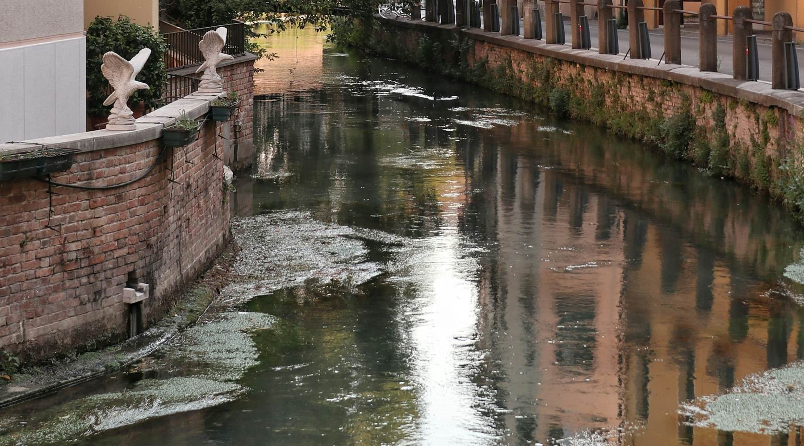
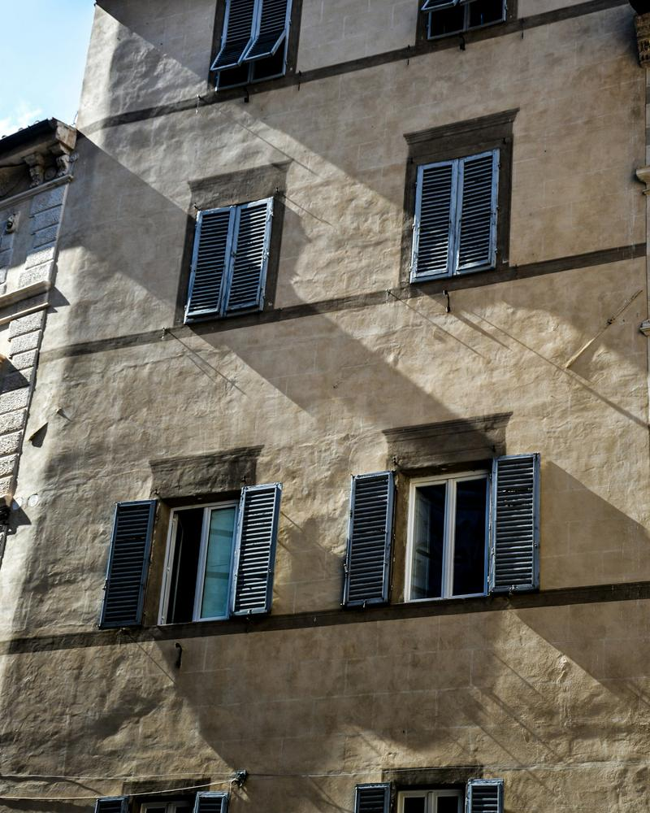
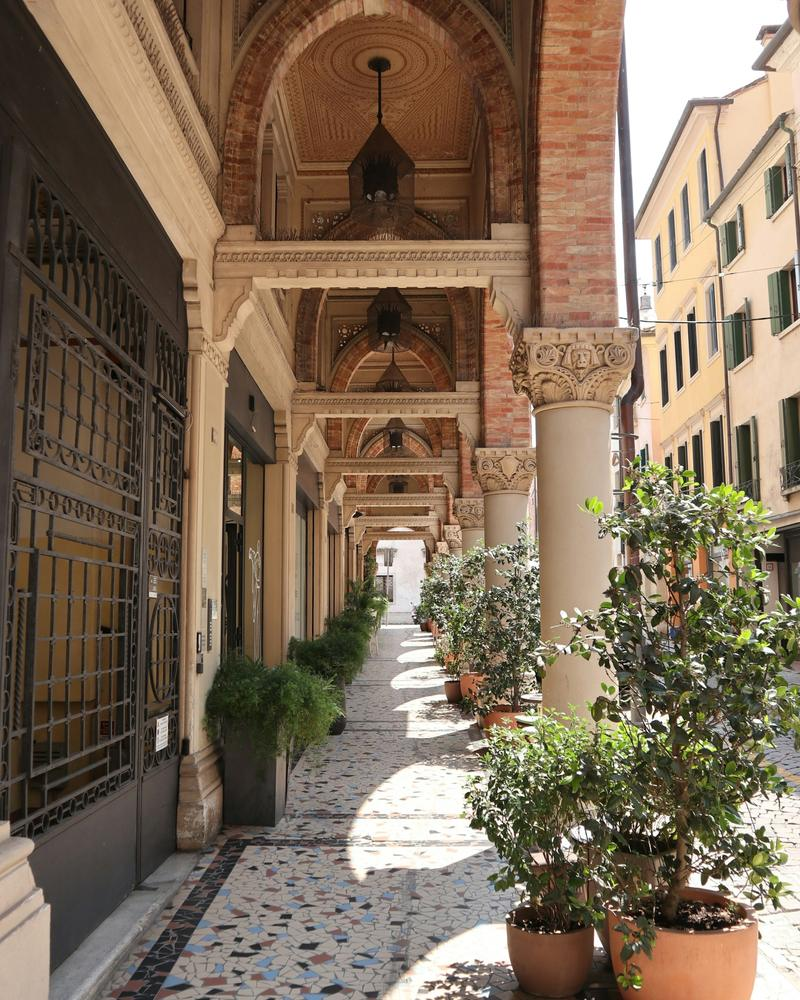
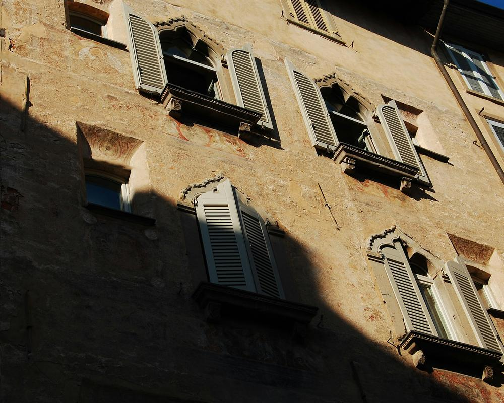

Treviso · Vicolo Alfredo Oriani 12
Muri vecchi, rimessi in piedi.
Restauri, opere murarie e ristrutturazioni a Treviso. Chiamate e raccontateci il lavoro.

- Restauriè il nome della ditta
- Opere murarieil mestiere di base
- Trevisosede in Vicolo Oriani 12
- S.a.s.Garbin Denis & C.
Cosa facciamo
Il lavoro del muratore, a Treviso.
- 01
Restauri
Muri, intonaci e facciate di case che hanno già una storia, da sistemare senza cancellarla.
- 02
Opere murarie
Murature, tramezze, aperture, rappezzi e riprese: la base di ogni cantiere.

- 03
Ristrutturazioni
Case e appartamenti da rimettere a posto, con le finiture fatte a mano.

Prima e dopo
Una facciata, rifatta.
- PrimaIntonaco che si stacca, umidità, colore sparito.
- DuranteSi toglie il vecchio, si consolida, si rifà l'intonaco.
- DopoFacciata pulita, colore nuovo, persiane a posto.
Foto illustrative: qui andranno i vostri lavori.
La ditta
Una ditta trevigiana, con un nome preciso.
Treviso Restauri di Garbin Denis & C. è una società in accomandita semplice con sede in Vicolo Alfredo Oriani, a Treviso. Il nome dice già il mestiere: restauri e lavori da muratore. Per un sopralluogo o un preventivo basta una chiamata.
Come si comincia
Tre passi.
- Telefonata
Ci dite dove si trova la casa e cosa c'è da fare.
- Sopralluogo
Veniamo a vedere il muro, la facciata, la stanza.
- Preventivo
Lavori e tempi scritti, poi si parte.
Contatti
Una chiamata basta.
- Cellulare333 801 3735
- WhatsAppScrivete un messaggio
- SedeVicolo Alfredo Oriani 12, 31100 Treviso